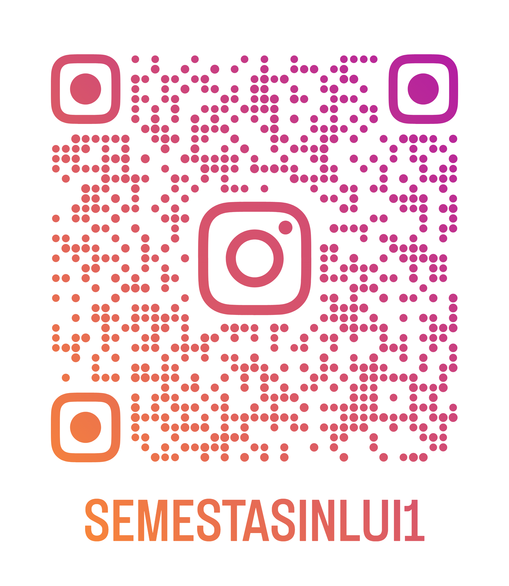
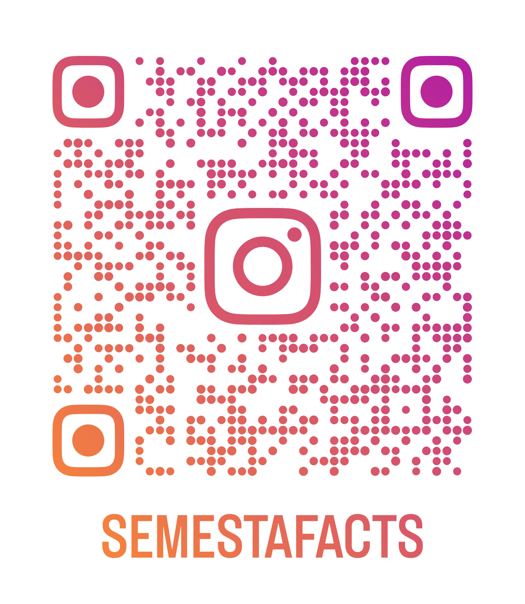

Kanal Informasi Resmi
Dukung gerakan nyata kepengurusan SEMESTA dan temukan berbagai edukasi menarik lewat rubrik Semfacts.
SEMESTA
Instagram Semesta
Ikuti aktivitas harian, dokumentasi aksi sosial, dan kabar program kerja terbaru dari kepengurusan Semesta Sinlui.
@semestasinlui1
Semfacts
Instagram Semesta Facts
Temukan infografis menarik, ulasan sains populer, dan serba-serbi riset akademik yang dikemas secara kasual.
@semestafacts
Scan & Follow
Kunjungi via QR Code 📱

IG Semesta
IG SemfactsArahkan kamera HP Anda untuk langsung menuju ke profil Instagram kami.
Suara Kalian Berarti Bagi Kami!
Jangan lupa untuk selalu Like, Comment, Share, dan Follow setiap postingan terbaru Semesta & Semfacts untuk mendukung pergerakan pembaharu Sinlui!
Once a Semesta, Always a Semesta.
Want a Change? Be the Change! — Bersinergi Maju Bersama Visi Semesta.